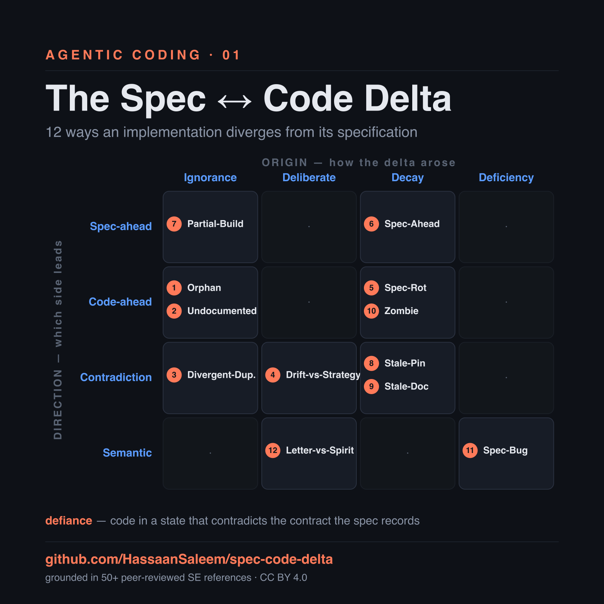
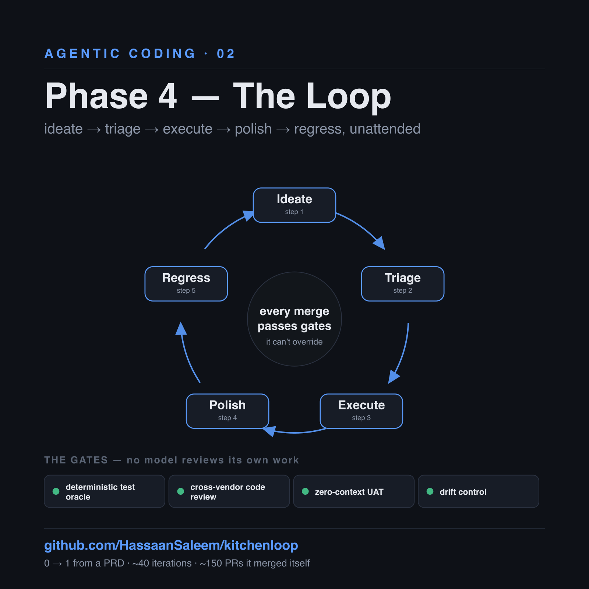
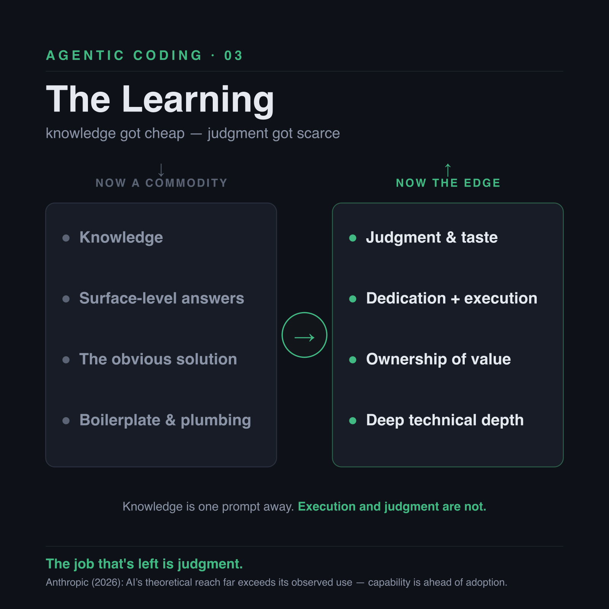

The Delta, the Loop, and the Learning
What I learned handing real software to autonomous AI agents.
AI coding has moved through four phases, each faster than the last:
- Phase 1 — Autocomplete. The model finishes your line.
- Phase 2 — Chat. "Write me this function" — GitHub Copilot, the Claude Code extension.
- Phase 3 — Spec-Driven Development. The model builds whole features against a written specification, not a one-off prompt.
- Phase 4 — The Loop. The agent runs the entire cycle on its own, unattended.
This is a field report from Phases 3 and 4.
That speed is real. Building Synapse — a production system written largely by agents — Phase 3 shipped features roughly 10× faster than Phase 2's "write me this function." Not hype, not a benchmark — just what a stretch of sustained work felt like.
The Delta
Phase 3 changes your relationship with the code. Reading it line by line was Phase 2's mode; in SDD you author the specs, the plan, and the tasks, and hand the implementation to the agent. That hand-off is what makes it fast — and it's where the trouble starts, because you stop seeing what actually gets written.
The trouble surfaced first as quality. Left alone, the agent would pile function on function, duplicate code instead of reusing it, and slip in monkey-patches just to get tests green — none of it obvious, because nobody was reading the diffs. Fixing it wasn't about a better model; it was about making quality something the process enforced instead of something you eyeballed. A planning-stage audit that looks for generalization first, so reuse and templating come before any new code. Clean-code and clean-architecture skills wired in as gates, with the core principles installed as a constitution the agents build against. A refactor pass every four or five cycles, so debt gets paid down on a schedule instead of compounding in the dark. That was enough to move the output from "works but ugly" to genuinely maintainable — because agents don't write clean code by default; you have to make it a gate they can't skip.
But quality was only the visible cost. Underneath it ran a quieter one, hidden by the same blind spot: the faster the code moved, the more it drifted from the specs meant to govern it. Call that drift what it is — defiance. Not "documentation lag," a phrase that excuses the code, but an implementation sitting in a state that contradicts the contract its spec records — a gap that has to be reconciled, not explained away.
It shows up in ordinary ways. A field the spec mandated that the code never wired. A decision the architecture explicitly forbade, silently reintroduced a few commits later. A doc that was true when it was written and now asserts the opposite of the running system. None of it loud. All of it accumulating.
That was worth pinning down properly. A real codebase, audited spec by spec, surfaces every distinct way an implementation and its specification diverge — and software engineering has been naming these failures for decades: architectural drift and erosion, software reflexion models, requirements traceability, software aging, technical debt, code clones. Every delta already had a literature behind it.

What came out was a taxonomy: twelve delta types on a grid of direction (which side is ahead — spec or code) against origin (how the gap arose — ignorance, deliberate choice, decay, or a defect in the spec itself). Each type comes with a way to detect it mechanically and a note on where the fix belongs — plus the one case that turns out not to be defiance at all: a deferral the spec itself sanctions. It's published, with its fifty-plus references, as an open reference anyone can cite: spec-code-delta.
The Loop
Cataloguing the problem is only half of it, though. Knowing the twelve ways code drifts doesn't stop it drifting — that needs a system to catch the deltas before they ever merge. And a harder question sat underneath: how much of the cycle could run with no one watching at all?
That became the second project: an agent that runs the whole cycle, not one prompted task at a time. I built one and called it KitchenLoop. Hand it a backlog — tasks it discovers itself, or ones you queue — and it drains it: inventing the next piece of work, building it, testing it, reviewing it, merging it, then picking up the one after. Around the clock. It comes back to a human only when it hits a genuine decision or gets stuck. It works a backlog the way a team does, except it doesn't clock out, and when it's unsure it escalates instead of guessing.

Seeded with nothing but a PRD, a technical architecture document, and a one-page constitution — no application code — it took a product from zero to one. The only human input was answering escalations.
The interesting part isn't the generation. Generation is mostly solved — models are good at producing code. The hard part is trust: whether you can actually leave the thing running and rely on what it merges. And trust doesn't come from a bigger model; it comes from verification the model can't override. So every merge in KitchenLoop passes gates the agent isn't allowed to argue with — a deterministic test oracle; an external, cross-vendor code review, because no model should review its own work, and that review also flags any drift between code and spec, the same twelve types from the taxonomy; a zero-context evaluator that re-tests the sealed specification with no idea how the code was written; and drift control that pauses the whole loop when quality starts to slip.
The sharpest moment of the build was watching it refuse itself. A fix had been committed after the tests that verified it, and the merge gate rejected the merge — because the gate confirms the exact commit being merged is the one that was actually verified, not some later, unverified change. A loop that says "no" to itself is what makes it safe to walk away from.
The Learning
Step back from the loop, though, because it's really a symptom of something bigger.
Since AI arrived, the thing that actually got commoditized isn't code, and it isn't content. It's knowledge. No access to a doctor? Describe your symptoms, get the tests worth running, take the results back, get a working theory. Car making a noise you don't like? Describe it, get a diagnosis — and, if you want, a step-by-step guide to fix it yourself. The technical barrier to almost every field short of frontier research has quietly fallen. Knowing is one prompt away.
Which means the scarce thing is no longer knowledge. It's dedication and execution. In any problem space the real question is whether you're willing to go technical — to treat the system yourself — or whether you'd rather stay at the abstraction and let the mechanic or the doctor handle it. Both are legitimate. But the surface layer, the low-hanging fruit in every domain, is now a commodity. The people who compound from here pair deep technical knowledge with the discipline to execute and deliver real value on top of it.

For software engineers specifically, this is good news. It frees up room for the part that was always hard: architecture, quality, and value. For years we offloaded "value" to product — but a non-technical PM can't audit the algorithm or the system serving users, so the gap between what shipped and what was actually valuable stayed invisible. Only the person who built a feature knows its real limits and reach. I'm not saying every engineer should become a product manager. Own the part of the product you implement, and optimize for value, not code. There are many ways to solve a problem; AI reaches for the obvious one, but only a few of them move the needle. Finding that one is research, not typing.
This matters most for the non-deterministic parts of a system — AI features, agent workflows — where the "right" answer is a judgment call. The deterministic layer, the platform plumbing, the AI already handles well; leave it there.
One honest caveat, because the debate deserves it: much of the scientific community still regards these models as content generators — next-token predictors, not real intelligence. As a description of the mechanism, that's fair. But "just predicting the next token" turns out to be remarkably effective in the right domains — software especially, where the output is structured and verifiable. An unglamorous mechanism doesn't make the leverage any less real.
The data backs the shape of this. Anthropic's labor-market research from early 2026 shows a wide gap between what AI can theoretically do across occupations and what it's actually used for — and the usage that does exist clusters in technical and knowledge work. Capability is well ahead of adoption. And the trend only sharpens: intelligence keeps climbing while the cost of it keeps falling. The leverage is a given now; the edge is what you point it at. (the research)
Which points to a bigger question than any one engineer's job. The gloomy reading is mass unemployment. A different hypothesis seems more likely: AI doesn't erase work so much as shift it toward value delivery — the parts that need judgment, taste, and ownership.
A future with less work has never meant the end of society, either. The fixed eight-hour day is a recent invention; for most of history work was seasonal, task-based, and shaped by what a community actually needed. As automation reduces the human labour required, the economic scaffolding around it can evolve too — as Elon Musk and others have argued, some form of universal income may become necessary, if only because money has to keep circulating for the system to function.
So the real question isn't whether work disappears. It's how we redefine productivity, income, purpose, and value in an economy where the machine does more of the doing.
Phase 3 named the problem. Phase 4 automated the solution. The job that's left — for engineers now, and maybe the rest of us soon — is judgment.